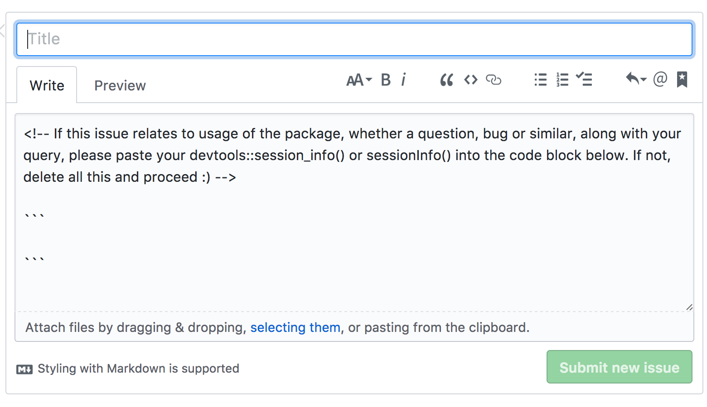

asking questions about ropensci software
Scott Chamberlain (@sckottie/@ropensci)
UC Berkeley / rOpenSci

scotttalks.info/qropensci
places/ways to get help
read the documentation
let us know if documentation is not good enough
open issue in the github repository
ask on Stackoverflow
stackoverflow.com/questions/tagged/r
ask on ropensci discussion forum
discuss.ropensci.org
email the maintainer
ideally move to public forum - but exceptions okay
| method | good for |
|---|---|
| read docs | appropriate every time! |
| github issue | problem specific to a package - bugs/feature reqeusts |
| ask on Stackoverflow | general R questions - see [ropensci] tag |
| ask on ropensci discussion forum | problem specific to an ropensci package - lots of other things |
| email the maintainer | private data - uncomfortable with public forums |
nudge w/ issue templates
